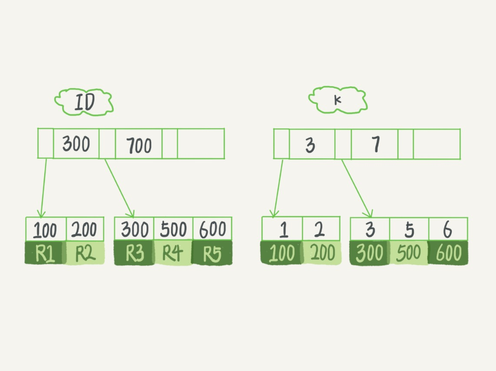
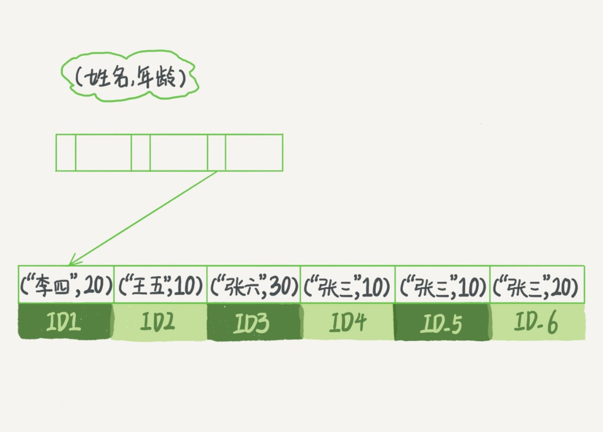
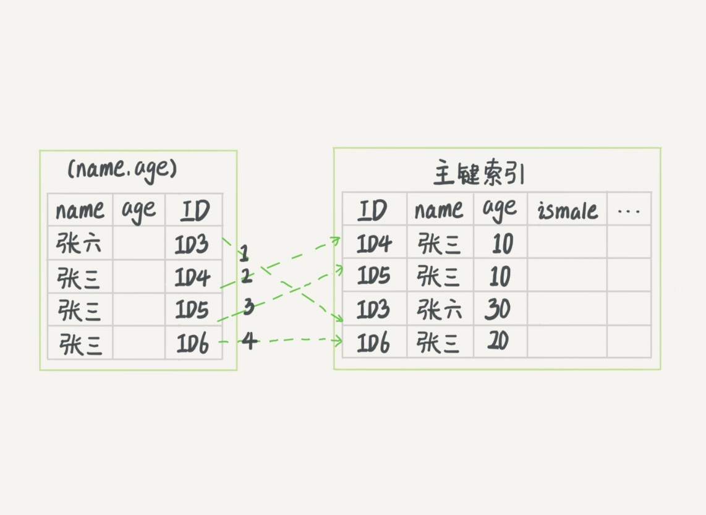
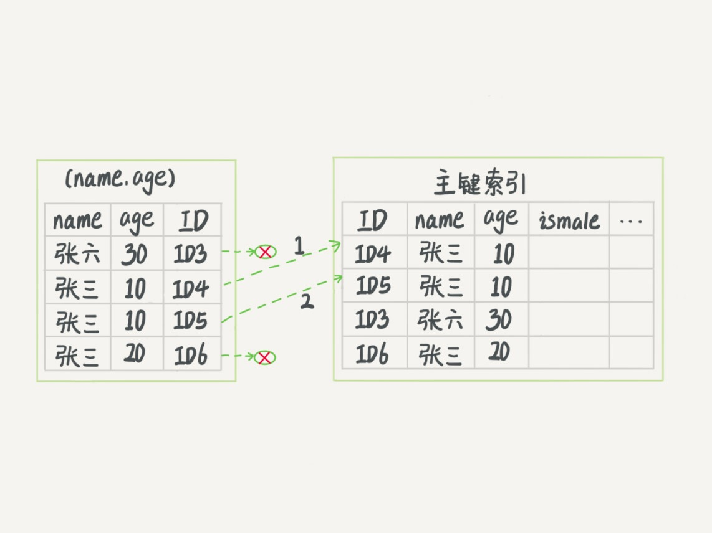

在上一篇文章中，我和你介绍了 InnoDB 索引的数据结构模型，今天我们再继续聊聊跟 MySQL 索引有关的概念。
在开始这篇文章之前，我们先来看一下这个问题：
在下面这个表 T 中，如果我执行 select * from T where k between 3 and 5，需要执行几次树的搜索操作，会扫描多少行？
下面是这个表的初始化语句。
mysql> create table T (
ID int primary key,
k int NOT NULL DEFAULT 0,
s varchar(16) NOT NULL DEFAULT '',
index k(k)
) engine=InnoDB;
insert into T values(100,1, 'aa'),(200,2,'bb'),(300,3,'cc'),(500,5,'ee'),(600,6,'ff'),(700,7,'gg');

现在，我们一起来看看这条 SQL 查询语句的执行流程：
- 在 k 索引树上找到 k=3 的记录，取得
ID = 300； - 再到 ID 索引树查到
ID=300对应的 R3； - 在 k 索引树取下一个值 k=5，取得 ID=500；
- 再回到 ID 索引树查到 ID=500 对应的 R4；
- 在 k 索引树取下一个值 k=6，不满足条件，循环结束。
在这个过程中，回到主键索引树搜索的过程，我们称为回表。可以看到，这个查询过程读了 k 索引树的 3 条记录（步骤 1、3 和 5），回表了两次（步骤 2 和 4）。
在这个例子中，由于查询结果所需要的数据只在主键索引上有，所以不得不回表。那么，有没有可能经过索引优化，避免回表过程呢？
覆盖索引
如果执行的语句是 select ID from T where k between 3 and 5，这时只需要查 ID 的值，而 ID 的值已经在 k 索引树上了，因此可以直接提供查询结果，不需要回表。也就是说，在这个查询里面，索引 k 已经“覆盖了”我们的查询需求，我们称为覆盖索引。
由于覆盖索引可以减少树的搜索次数，显著提升查询性能，所以使用覆盖索引是一个常用的性能优化手段。
需要注意的是，在引擎内部使用覆盖索引在索引 k 上其实读了三个记录，R3~R5（对应的索引 k 上的记录项），但是对于 MySQL 的 Server 层来说，它就是找引擎拿到了两条记录，因此 MySQL 认为扫描行数是 2。
备注：关于如何查看扫描行数的问题，我将会在第 16 文章《如何正确地显示随机消息？》中，和你详细讨论。
基于上面覆盖索引的说明，我们来讨论一个问题：在一个市民信息表上，是否有必要将身份证号和名字建立联合索引？
假设这个市民表的定义是这样的：
CREATE TABLE `tuser` (
`id` int(11) NOT NULL,
`id_card` varchar(32) DEFAULT NULL,
`name` varchar(32) DEFAULT NULL,
`age` int(11) DEFAULT NULL,
`ismale` tinyint(1) DEFAULT NULL,
PRIMARY KEY (`id`),
KEY `id_card` (`id_card`),
KEY `name_age` (`name`,`age`)
) ENGINE=InnoDB
我们知道，身份证号是市民的唯一标识。也就是说，如果有根据身份证号查询市民信息的需求，我们只要在身份证号字段上建立索引就够了。而再建立一个（身份证号、姓名）的联合索引，是不是浪费空间？
如果现在有一个高频请求，要根据市民的身份证号查询他的姓名和年龄，这个联合索引就有意义了。它可以在这个高频请求上用到覆盖索引，不再需要回表查整行记录，减少语句的执行时间。
当然，索引字段的维护总是有代价的。因此，在建立冗余索引来支持覆盖索引时就需要权衡考虑了。这正是业务 DBA，或者称为业务数据架构师的工作。
最左前缀原则
看到这里你一定有一个疑问，如果为每一种查询都设计一个索引，索引是不是太多了。如果我现在要按照市民的身份证号去查他的家庭地址呢？虽然这个查询需求在业务中出现的概率不高，但总不能让它走全表扫描吧？反过来说，单独为一个不频繁的请求创建一个（身份证号，地址）的索引又感觉有点浪费。应该这么做呢？
这里，我先和你说结论吧。B+ 树这种索引结构，可以利用索引的“最左前缀”，来定位记录。为了直观地说明这个概念，我们用（name，age）这个联合索引来分析。

可以看到，索引项是按照索引定义里面出现的字段顺序排序的。
当你的逻辑需求是查到所有名字是“张三”的人时，可以快速定位到 ID4，然后向后遍历得到所有需要的结果。
如果你要查的是所有名字第一个字是“张”的人，你的 SQL 语句的条件是”where name like ‘张 %’”。这时，你也能够用上这个索引，查找到第一个符合条件的记录是 ID3，然后向后遍历，直到不满足条件为止。
可以看到，不只是索引的全部定义，只要满足最左前缀，就可以利用索引来加速检索。这个最左前缀可以是联合索引的最左 N 个字段，也可以是字符串索引的最左 M 个字符。
基于上面对最左前缀索引的说明，我们来讨论一个问题：在建立联合索引的时候，如何安排索引内的字段顺序。
这里我们的评估标准是，索引的复用能力。因为可以支持最左前缀，所以当已经有了 (a,b) 这个联合索引后，一般就不需要单独在 a 上建立索引了。因此，第一原则是，如果通过调整顺序，可以少维护一个索引，那么这个顺序往往就是需要优先考虑采用的。
所以现在你知道了，这段开头的问题里，我们要为高频请求创建 (身份证号，姓名）这个联合索引，并用这个索引支持“根据身份证号查询地址”的需求。
那么，如果既有联合查询，又有基于 a、b 各自的查询呢？查询条件里面只有 b 的语句，是无法使用 (a,b) 这个联合索引的，这时候你不得不维护另外一个索引，也就是说你需要同时维护 (a,b)、(b) 这两个索引。
这时候，我们要考虑的原则就是空间了。比如上面这个市民表的情况，name 字段是比 age 字段大的 ，那我就建议你创建一个（name,age) 的联合索引和一个 (age) 的单字段索引。
索引下推
上一段我们说到满足最左前缀原则的时候，最左前缀可以用于在索引中定位记录。这时，你可能要问，那些不符合最左前缀的部分，会怎么样呢？
我们还是以市民表的联合索引（name, age）为例。如果现在有一个需求：检索出表中“名字第一个字是张，而且年龄是 10 岁的所有男孩”。那么，SQL 语句是这么写的：
mysql> select * from tuser where name like '张 %' and age=10 and ismale=1;
你已经知道了前缀索引规则，所以这个语句在搜索索引树的时候，只能用 “张”，找到第一个满足条件的记录 ID3。当然，这还不错，总比全表扫描要好。
然后呢？
当然是判断其他条件是否满足。
在 MySQL 5.6 之前，只能从 ID3 开始一个个回表。到主键索引上找出数据行，再对比字段值。
而 MySQL 5.6 引入的索引下推优化（index condition pushdown)， 可以在索引遍历过程中，对索引中包含的字段先做判断，直接过滤掉不满足条件的记录，减少回表次数。
图 3 和图 4，是这两个过程的执行流程图。


在图 3 和 4 这两个图里面，每一个虚线箭头表示回表一次。
图 3 中，在 (name,age) 索引里面我特意去掉了 age 的值，这个过程 InnoDB 并不会去看 age 的值，只是按顺序把“name 第一个字是’张’”的记录一条条取出来回表。因此，需要回表 4 次。
图 4 跟图 3 的区别是，InnoDB 在 (name,age) 索引内部就判断了 age 是否等于 10，对于不等于 10 的记录，直接判断并跳过。在我们的这个例子中，只需要对 ID4、ID5 这两条记录回表取数据判断，就只需要回表 2 次。
小结
今天这篇文章，我和你继续讨论了数据库索引的概念，包括了覆盖索引、前缀索引、索引下推。你可以看到，在满足语句需求的情况下， 尽量少地访问资源是数据库设计的重要原则之一。我们在使用数据库的时候，尤其是在设计表结构时，也要以减少资源消耗作为目标。
接下来我给你留下一个问题吧。
实际上主键索引也是可以使用多个字段的。DBA 小吕在入职新公司的时候，就发现自己接手维护的库里面，有这么一个表，表结构定义类似这样的：
CREATE TABLE `geek` (
`a` int(11) NOT NULL,
`b` int(11) NOT NULL,
`c` int(11) NOT NULL,
`d` int(11) NOT NULL,
PRIMARY KEY (`a`,`b`),
KEY `ca` (`c`,`a`),
KEY `cb` (`c`,`b`)
) ENGINE=InnoDB;
公司的同事告诉他说，由于历史原因，这个表需要 a、b 做联合主键，这个小吕理解了。
但是，学过本章内容的小吕又纳闷了，既然主键包含了 a、b 这两个字段，那意味着单独在字段 c 上创建一个索引，就已经包含了三个字段了呀，为什么要创建“ca”“cb”这两个索引？
同事告诉他，是因为他们的业务里面有这样的两种语句：
select ... from geek where c=N order by a;
select ... from geek where c=N order by b;
我给你的问题是，这位同事的解释对吗，为了这两个查询模式，这两个索引是否都是必须的？为什么呢？
表记录
| a | b | c | d |
|---|---|---|---|
| 1 | 2 | 3 | d |
| 1 | 3 | 2 | d |
| 1 | 4 | 3 | d |
| 2 | 1 | 3 | d |
| 2 | 2 | 2 | d |
| 2 | 3 | 4 | d |
主键 a，b 的聚簇索引组织顺序相当于 order by a,b ，也就是先按 a 排序，再按 b 排序，c 无序。
索引 ca 的组织是先按 c 排序，再按 a 排序，同时记录主键
| c | a | 主键部分b（注意，这里不是 ab，而是只有 b） |
|---|---|---|
| 2 | 1 | 3 |
| 2 | 2 | 2 |
| 3 | 1 | 2 |
| 3 | 1 | 4 |
| 3 | 2 | 1 |
| 4 | 2 | 3 |
这个跟索引 c 的数据是一模一样的。
索引 cb 的组织是先按 c 排序，在按 b 排序，同时记录主键
| c | b | 主键部分a（同上） |
|---|---|---|
| 2 | 2 | 2 |
| 2 | 3 | 1 |
| 3 | 1 | 2 |
| 3 | 2 | 1 |
| 3 | 4 | 1 |
| 4 | 3 | 2 |
所以，结论是 ca 可以去掉，cb 需要保留